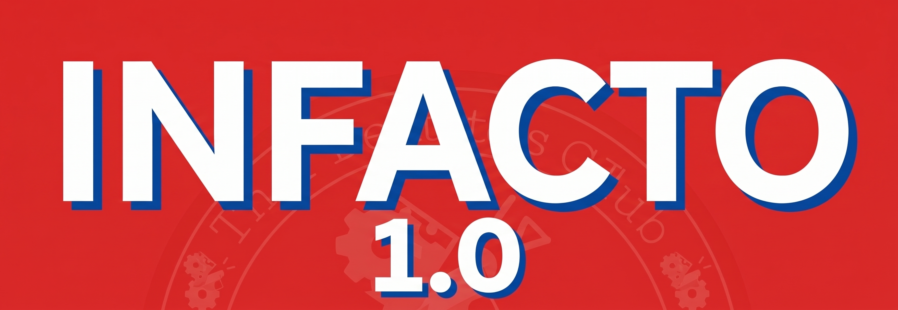

Our History
A look back at previous editions of the Infacto debate competition.

Infacto 4.0
Held under the theme "Order & Chaos," Infacto 4.0 is the fourth flagship inter-college debate competition by The Orator Club, IIIT Nagpur, organized under the Student Activity Council (SAC) with a ₹28,000 prize pool.
The theme explores the tension between order (structure, stability, continuity) and chaos (disruption, freedom, transformation), forces that shape everything from geopolitics and law to philosophy, science, and technology, inviting debaters to examine how progress emerges when the two collide.
The format draws on Oxford-style debate but is restructured to be more dynamic and accessible: two-member teams open with speeches, move through a rebuttal round, and close with final statements. On Day 1, each team debates twice; the competition then progresses through an Elimination Round, Round of 24, Round of 16, Quarter-Finals (8 teams), Semi-Finals (4 teams), and Finals.
- Club Head: Tanuj Game
Infacto 3.0
Held on 28th September 2024 at IIIT Nagpur with a ₹16,000 prize pool, themed "The Fall of a Superpower and the Rise of Regional Powers."
The edition explored shifting global power through economic realignment, military strategy, cultural renaissance, and diplomatic negotiation.
The Oxford-style format ran across five stages — Elimination Round, Round 1, Quarter-Finals, Semi-Finals, and Finals — with formal dress code and topics shared via registered email.
- Club Head: Vaibhav Khanna

.jpeg)
Infacto 2.0
Held on 13th September 2023 as a single-day event at the Academic Block, IIIT Nagpur. Organized by Orator under the Student Activity Council with a ₹13,000 prize pool.
The theme, "Navigating the Geopolitical Spectrum: Unveiling Power Struggles, Fostering Alliances," covered diplomatic maneuvering, economic influence, cultural clashes, and technological supremacy.
Two-member teams competed through opening speeches, a rebuttal round, and closing speeches, across three stages — League, Semi-Finals, and Finals — with eliminations based on the number of participants received.
- Club Head: Harsh Suhan
Infacto 1.0
The inaugural edition, held on 16th September 2022 as Orator Club's first-ever flagship event, featuring an ₹8,500 prize pool.
In an era marked by shifting global power dynamics, international conflicts, economic fragmentation, and climate challenges, geopolitics has become more relevant than ever. The growing rivalry between major powers, ongoing wars, and increasing global polarization are reshaping the world order. Through this theme, we aim to explore how nations navigate these complex challenges and how today's geopolitical decisions will influence the future of global peace, stability, and cooperation.
Running from 10 AM to 6 PM with the inauguration at 10:30 AM and finals in the Seminar Hall from 4:15 PM, it introduced IIIT Nagpur to an Oxford-style inter-college debate on the theme of geopolitics.
- Club Head: Harsh Bajaj
